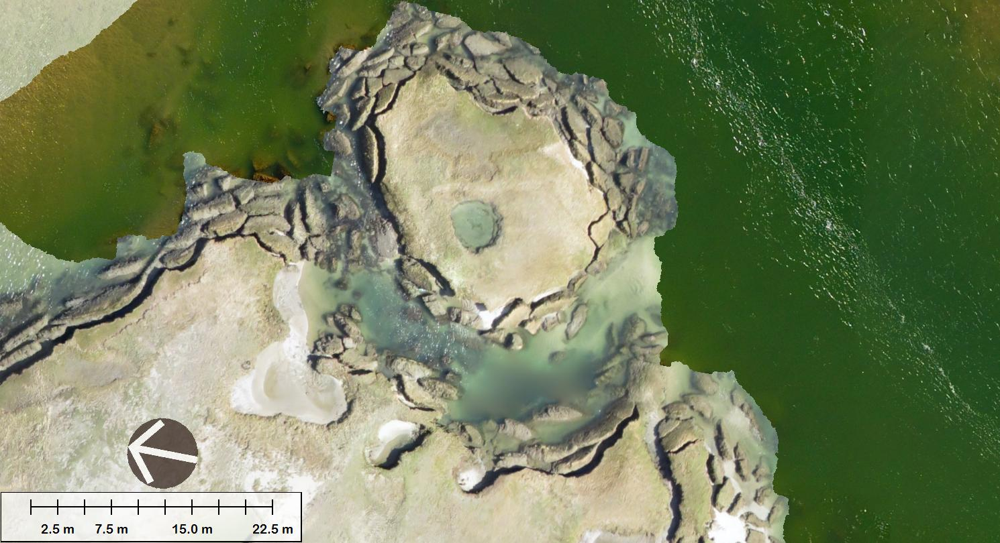
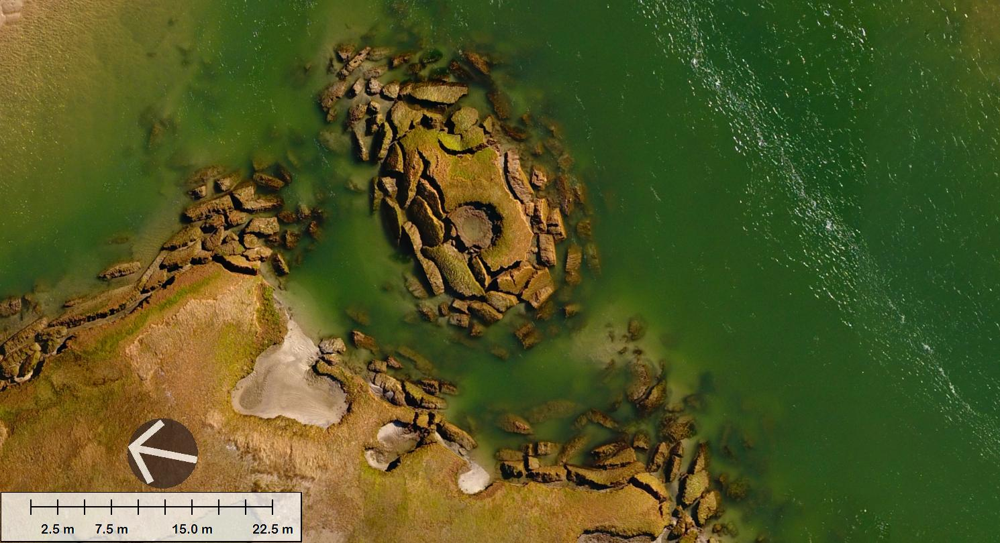

Nauset Marsh near Nauset Inlet
These images are orthophoto mosiacs made from unmanned aerial systems flown on March 30, 2016 and March 17, 2017. Each pixel represents 5 cm on the ground.
Grab and drag the green handle to compare images.

